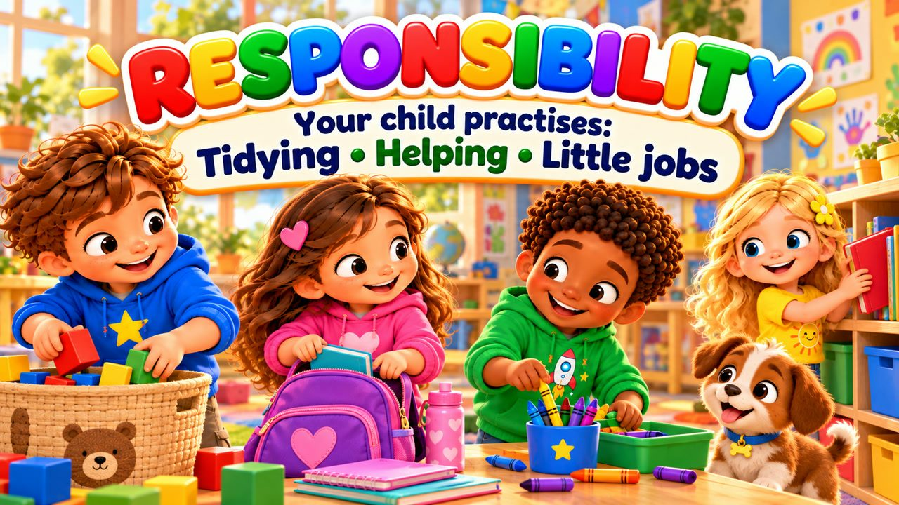
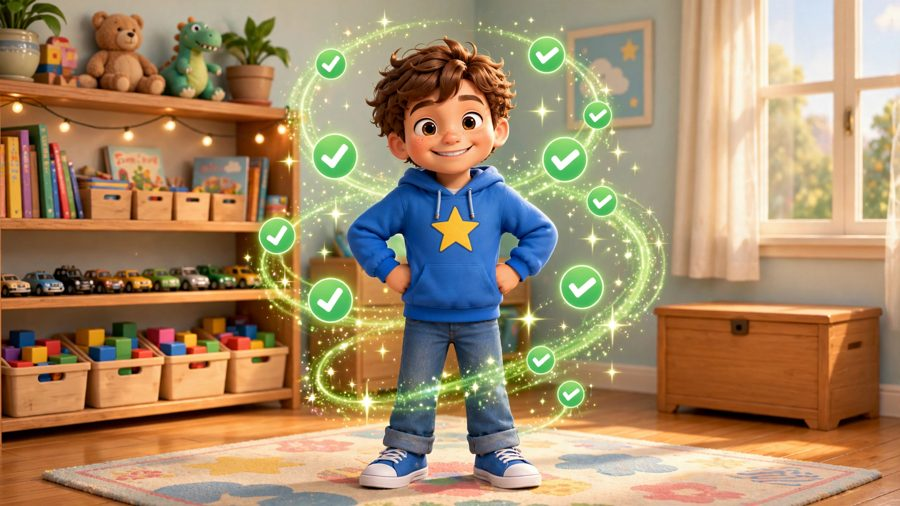
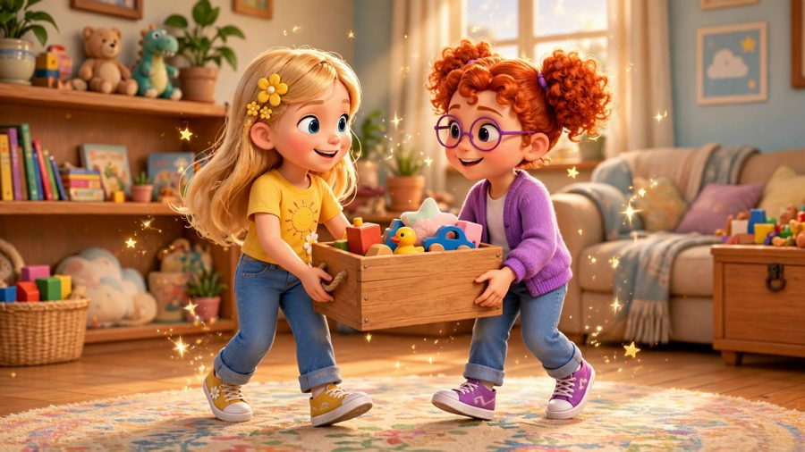
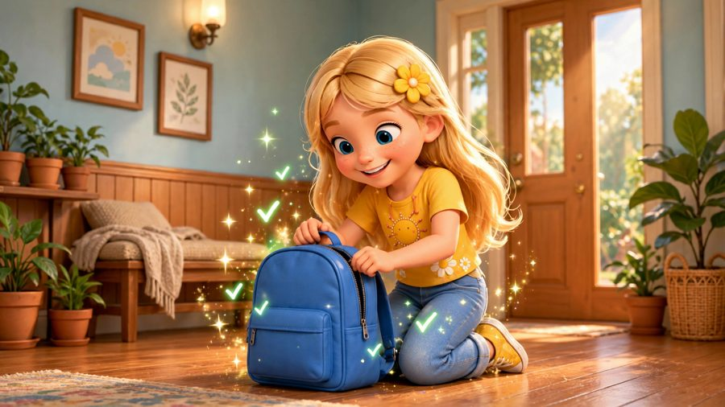
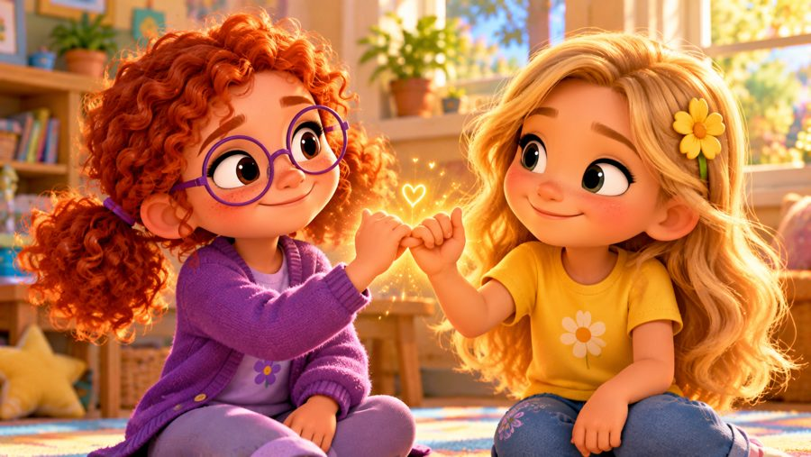

I Can Do My Part
A song about responsibility! ⭐ Sing along with Max, Mia, Jay, Lily, Rosie and Buddy the puppy as they tidy up their toys, pack their bags, help clean the classroom — and make things right when a little mistake happens.
"I Can Do My Part!" is a sing-along song for kids about responsibility. Max puts his toys back before going outside, Mia checks her school bag, the whole class cleans up the paint together, and when Jay spills water he wipes it up himself. With karaoke lyrics on screen, it's perfect for preschool, kindergarten and early elementary kids (ages 3–8), at home or in the classroom.

▶💡 Why this skill matters: responsibility
Responsibility grows from small things: putting toys away, packing a bag, cleaning up a spill. Children who “do their part” feel capable and trusted, and learn that their actions matter to others. Give your child one small daily job, thank them for it, and when mistakes happen, focus on fixing them together — not on blame.
👨👩👧 What your child learns
- If I use it, I put it away
- Doing little jobs and keeping my word
- Helping with what is ours, not just what is mine
- Mistakes happen — and I can help make them right
- Responsibility doesn't mean being perfect, it means trying
💬 Talk about it after the song
- What is one little job you can do at home every day?
- What did Jay do after the water spilled?
🏅 Quiz & Certificate
Watched the song together? Now read each question aloud — your child points to the right picture. Answer all 6 questions and your child earns a printable certificate!
🔒 The name is only used to draw the certificate on your device. We don't save or send anything.
You did it! 🎉
All 6 answers are right! Type your child's name to make the certificate.
🖨️ Free printables
Free for home and classroom use. Print on A4 or Letter paper.
🖼️ Scenes from the song






🎵 More songs


🎤 Lyrics – I Can Do My Part
I've got things
that I can do!
Little jobs
I'm responsible for too!
I can help,
I can start,
I can do my part!
Max was building on the floor,
Blocks and cars
and so much more.
Then it was time
to go outside...
He almost left
the mess behind.
But Max stopped
and looked around:
"These are the toys
that I took out."
Block by block
and car by car,
He put them back
where they belong.
"All cleaned up!
Now I can go!"
Taking care
helps everyone!
If I use it,
I put it away.
If I have a job,
I do it today.
I don't need
someone to start...
I can remember
to do my part!
I can do my part!
I can do my part!
Little responsibilities
make a great big start!
I can help!
I can care!
I can put things
where they belong!
Do my job!
Keep my word!
Try to make
a wrong thing right!
Step by step,
from the very start...
I can do my part!
Mia packed her school bag
for the day.
Book goes in,
lunch put away.
She checked her things
before she left:
"Do I have
everything I need?"
Later in the classroom,
paint was everywhere.
Rosie said,
"We all used it,
so let's all help!"
Brushes washed,
paper stacked,
Paint pots
put neatly back.
Everyone helped
a little bit...
And soon the room
was clean again!
If I use it,
I put it away.
If I have a job,
I do it today.
I don't need
someone to start...
I can remember
to do my part!
I can do my part!
I can do my part!
Little responsibilities
make a great big start!
I can help!
I can care!
I can put things
where they belong!
Do my job!
Keep my word!
Try to make
a wrong thing right!
Step by step,
from the very start...
I can do my part!
Jay was carrying cups outside,
Then one tipped
onto its side.
Splash!
Water spilled
across the floor.
Jay looked down:
"Oh no!"
He could walk away
and leave it there...
But Jay knew
that wouldn't be fair.
"I spilled it,
so I'll clean it up."
He found a towel
and wiped it up.
Mistakes can happen,
that's okay.
Responsibility means
I help make things right again!
Used your toys?
PUT THEM AWAY!
Got a little job?
DO IT TODAY!
Made a promise?
TRY TO REMEMBER!
Made a mess?
HELP CLEAN IT UP!
Made a mistake?
MAKE IT RIGHT!
Working together?
DO YOUR PART!
Who can be responsible?
I CAN!
Being responsible
doesn't mean
I never forget.
It doesn't mean
I never make mistakes.
It means...
I try to remember.
I take care
of what is mine.
I help with
what is ours.
And when I make a mistake...
I do what I can
to make it right.
I can do my part!
I can do my part!
Little responsibilities
make a great big start!
Pack my things!
Clean my space!
Put my toys
back in their place!
Help my team!
Keep my word!
Take good care
of what I use!
If I make
a little mistake...
I can help
to make it right!
Step by step,
with a caring heart...
I can do...
I can do...
I CAN DO MY PART!
One little job...
One little start...
I can help
every day...
I can do my part!